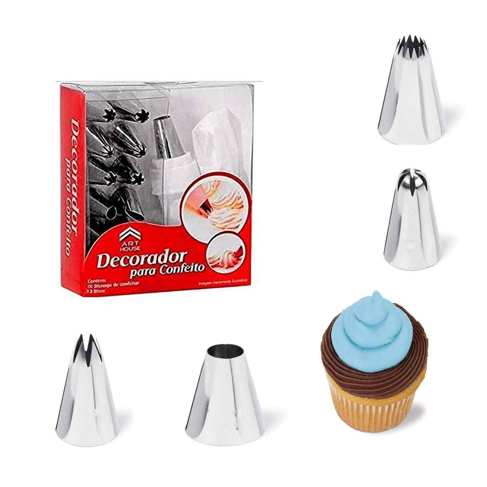

Best Bakeware in Lahore: Practical Shopping Guide

Looking for the best bakeware in Lahore? This practical shopping guide helps you navigate the options available on Sasta Milagaa, focusing on quality, functionality, and value for everyday use. The catalog features a range of bakeware products, from cake decorating sets to manual ice crushers, each designed for different baking and kitchen needs. While the category includes items like cake decorating tools and ice shavers, it does not cover traditional bakeware such as baking sheets or oven-safe dishes. This guide highlights key factors to consider when choosing bakeware, including material quality, ease of use, and delivery options. Whether you're a home baker or a professional, understanding the scope of available products and delivery policies will help you make informed decisions when shopping online.
Quick buying check: Match the actual item to your task, check its measurements or compatibility, and compare the full delivered price. Read the listing and policies before you order. The examples below are catalog evidence, not hands-on test results.
Key benefits of choosing Bakeware carefully
- Better fit for your task: select the specification or design your situation needs.
- Clearer budget: compare the item, delivery and any required extras together.
- Fewer avoidable returns: resolve missing measurements and compatibility questions before ordering.
- More useful ownership: check how the item will be stored, cleaned and used.
Selection criteria and matching the actual task for Bakeware
Selection criteria for bakeware in Lahore should focus on material quality, durability, and suitability for local baking needs. Look for non-stick surfaces that perform well with common ingredients like ghee and flour. Consider the size and shape to ensure they fit standard ovens and baking sheets used in Pakistani kitchens. Check for heat resistance and even heat distribution to avoid undercooked or burnt items. Prioritize brands known for reliability and positive user feedback in the region.
Matching the actual task involves assessing how the bakeware will be used daily. For frequent baking, choose items that are easy to clean and store. Ensure the products are compatible with common cooking methods like oven use, stovetop, or microwave. Verify if the bakeware supports the types of recipes popular in Lahore, such as bread, cakes, and pastries. Confirm that the items meet practical needs without unnecessary features that may increase cost.
Avoid making assumptions about product availability or performance. Always refer to the seller’s specifications and customer reviews for accurate insights. Compare delivery options and costs to understand the full expense. Check for any restrictions or additional fees that may affect the purchase. Ensure the bakeware aligns with your cooking habits and household requirements before finalizing the order.
Fit, dimensions, compatibility or edition checks for Bakeware
Fit is essential when selecting bakeware in Lahore. Ensure the size matches your oven and baking needs. Check if the product fits your kitchen storage space. Confirm the shape and depth align with your recipes. Verify that the dimensions allow for proper heat distribution and even baking. Always compare measurements with your existing tools to avoid mismatches. Measure your oven’s interior to ensure the bakeware fits without touching the sides. Check the height and width of pans to prevent overflow or uneven cooking.
Dimensions matter for compatibility with ovens and baking sheets. Measure your oven’s interior to ensure the bakeware fits without touching the sides. Check the height and width of pans to prevent overflow or uneven cooking. Confirm that the product’s size matches your baking requirements. Look for detailed specifications to avoid surprises. Proper sizing ensures better performance and safety during use. Compatibility with existing kitchen tools is key. Ensure the bakeware works with your oven type and accessories.
Compatibility with existing kitchen tools is key. Ensure the bakeware works with your oven type and accessories. Check if it fits standard baking sheets or trays. Verify that it pairs well with other items in your collection. Confirm that it meets your cooking style and needs. Proper compatibility enhances usability and reduces the risk of damage or inefficiency. Always check if the product is suitable for the types of food you bake regularly. Consider the material and its heat conductivity for different recipes.
Quality evidence and limitations of listing claims for Bakeware
Quality evidence for listing claims in this article can be found in customer reviews, product specifications, and seller credibility. Look for detailed descriptions of materials, durability, and performance. Verify if the seller has a track record of reliable delivery and customer service. Check for any certifications or standards that the bakeware meets, which can indicate quality. These elements help validate the claims made in listings and guide informed decisions.
Limitations of listing claims often include incomplete or misleading information. Some listings may lack details on material quality, size accuracy, or usage conditions. Delivery times, return policies, and customer support availability can also be unclear. These gaps can lead to unexpected issues upon receipt. Always cross-reference information with multiple sources and read user feedback to identify potential shortcomings in the listing. Be wary of vague descriptions or overly generic claims, as they may not reflect the true quality or functionality of the product.
Be cautious of exaggerated claims or overly generic descriptions. Some listings may not provide enough context about the product’s suitability for specific baking needs. Ensure that the product aligns with your requirements by checking dimensions, weight capacity, and compatibility with ovens or other equipment. Use the provided checklist to evaluate each listing thoroughly and avoid assumptions about product performance or features. Look for listings that include clear images, detailed measurements, and user testimonials. This helps build a more accurate picture of what to expect.
Budget tradeoffs and the full delivered cost for Bakeware
Budget tradeoffs in bakeware shopping require balancing initial cost with long-term value. Cheaper options may lack durability or performance, leading to more frequent replacements. Consider how often you bake and the types of recipes you prepare. A slightly higher investment in quality materials can reduce the need for frequent purchases. Always compare prices across platforms but factor in delivery charges and return policies. These elements can significantly affect the total cost.
Full delivered cost includes not just the product price but also shipping, taxes, and potential return expenses. Some sellers offer free delivery, while others charge based on weight or distance. Check if the seller allows cash on delivery, which can impact your decision. Also, consider the time it takes for delivery and how it aligns with your needs. A lower price might not be better if it means waiting longer or paying extra for shipping.
Understanding the full delivered cost helps avoid surprises. Look for clear pricing details and read customer reviews about delivery experiences. Some sellers may have hidden fees or unclear return policies. Always verify the total cost before purchasing. This approach ensures you make an informed decision that fits your budget and requirements. It also helps in planning your baking needs without unexpected expenses.
Setup, care, storage and useful ownership for Bakeware
Setup for bakeware involves ensuring the right tools are available for the intended use. Check that pans, molds, and trays fit your oven and kitchen space. Verify compatibility with your cooking methods, such as baking, roasting, or freezing. Always read instructions for any special preparation or seasoning required before first use. Consider the size and shape of items to match your baking needs, whether for small batches or large family meals. Ensure that any accessories like lids or handles are included and functional.
Care and maintenance depend on the material type. Clean regularly with mild soap and water, avoiding abrasive cleaners that can damage surfaces. Dry thoroughly to prevent rust or staining. Follow manufacturer guidelines for any specific care needs, such as hand-washing or avoiding high heat. For non-stick surfaces, use wooden or silicone utensils to avoid scratching. Avoid sudden temperature changes, which can cause warping or cracking. Regular maintenance keeps bakeware in good condition and ensures safe, consistent performance over time.
Storage should keep bakeware organized and protected. Stack items carefully to avoid scratches, and store in a cool, dry place. Use drawer dividers or shelves to keep items accessible. For larger items, consider hanging racks or overhead storage to save space. Proper storage extends the lifespan of your bakeware and keeps it ready for use whenever needed. Avoid storing in damp areas to prevent corrosion. Organized storage also makes it easier to find the right tool quickly, improving overall kitchen efficiency.
Common mistakes, arrival inspection and returns for Bakeware
Common mistakes when buying bakeware in Lahore include overlooking material quality and not checking for proper dimensions. Many buyers focus only on price, ignoring durability and heat distribution. It's important to verify if the product meets your specific baking needs, such as oven safety or non-stick performance. Avoid assuming all items listed are available, as some may be out of stock or not sold locally. Always read descriptions carefully to avoid surprises upon delivery.
Upon arrival, inspect bakeware for any damage or defects before accepting the package. Check for cracks, warping, or missing parts, especially if the item was shipped. If anything is wrong, document it with photos and contact the seller immediately. For returns, follow the seller’s policy and keep all receipts. In Lahore, some sellers may offer returns, but others may not, so it’s wise to confirm return options before purchasing. Always ensure the item matches the description and meets your expectations.
Returns can be complicated, especially with online purchases in Pakistan. Some sellers may charge restocking fees or require the item to be in original packaging. Understand the return policy clearly before buying, and keep all communication records. If you’re unsure, opt for sellers with clear return guidelines. For cash on delivery, inspect the item thoroughly before paying. This helps prevent issues later and ensures you get a product that suits your needs. Always prioritize transparency and clarity in the buying process.
Future changes and responsible shopping decisions for Bakeware
Future changes in the bakeware market may include more sustainable materials and locally produced options. Consumers in Lahore should look for brands that prioritize eco-friendly practices and support local manufacturing. Staying informed about industry trends can help make more responsible choices. Keeping an eye on product innovations ensures that purchases align with evolving environmental and quality standards. Opting for products with minimal packaging and recyclable materials reduces environmental impact.
Responsible shopping decisions involve considering the long-term value of bakeware rather than just the initial price. Evaluating factors like durability, ease of care, and energy efficiency can lead to better outcomes. Supporting businesses that offer transparent practices and reliable customer service helps build a more ethical marketplace. Making informed choices benefits both the consumer and the broader community. Checking for certifications or user reviews that highlight product longevity and performance can guide better decisions.
Shopping for bakeware in Lahore requires careful attention to delivery options and return policies. Checking for reliable shipping methods and clear return procedures can prevent future issues. Being aware of the full cost, including delivery charges, ensures a more accurate budget. These steps help create a smoother shopping experience and reduce the risk of dissatisfaction. Prioritizing sellers with flexible return windows and clear communication about delivery timelines is essential. Also, verifying if the seller offers cash on delivery can provide added security.
A useful buying decision connects your actual task to a clearly described item. A category name, attractive photo or low headline price cannot replace checking what will arrive and whether it fits.
Illustrative Pakistan use cases for Bakeware
Illustrative: compare a fixed PKR budget
A baker with a fixed budget in Lahore should compare the total delivered cost of bakeware by adding the listed price and delivery fee. For example, a cake decorating set priced at PKR 270 with a PKR 250 delivery charge totals PKR 520, which may be more than a similar item with free delivery above PKR 5000. Checking the delivery policy helps avoid unexpected expenses and ensures the best value for money when buying online.
Illustrative: check fit for shared home use
A family sharing a kitchen might need bakeware that fits multiple uses, like a manual airbrush cake spray gun that works for both small and large desserts. They should check if the product’s size and features match their needs, such as whether the 4 decorating tubes allow for varied designs. Ensuring the tool is easy to clean and store helps it stay useful for all household bakers.
Illustrative: plan delivery and arrival inspection
Someone ordering to a smaller town should plan for longer delivery times and inspect the item upon arrival. For instance, a manual ice crusher might take 3-6 working days to reach their area. They should check for any damage or missing parts before accepting the delivery and keep the receipt for returns if needed. Understanding the return policy helps them handle issues efficiently.
Comparison and evidence from actual catalog listings
The following listing snapshot was recorded at 2026-10-25 05:10:20 PKT. These are seller-provided descriptions, not independent performance tests. A category label does not confirm that an item suits every task discussed in this guide. Check the linked item for its current price, availability, measurements and included accessories.
| Listed item | Snapshot price | Listing evidence and limits |
|---|---|---|
| 15 Piece Professional Cake Decorating Set | Rs 270 | Listing description: 15-piece professional cake decorating set. Includes various stainless steel piping nozzles for perfect icing and decoration. Great for professional and home bakers. Confirm any unspecified detail with the store. |
| Cake Manual Airbrush Cake Spray Gun with 4 Decorating Tubes – DIY Cake Decorating & Baking Tool | Rs 525 | Listing description: Create professional-looking cakes and desserts with this Manual Cake Airbrush Spray Gun. Confirm any unspecified detail with the store. |
| Manual Ice Crushing Shaver Maker Machine Gola Ganda Household Ice Crusher For Refreshing Summer Treats | Rs 1,381 | Listing description: Manual Ice Crushing Shaver Maker Machine Gola Ganda Provides Easy And Quick Way To Prepare Refreshing Ice Treats At Home. Confirm any unspecified detail with the store. |
Delivery and returns: Sasta Milaga currently lists Rs 250 delivery, free above Rs 5,000. Usual estimates are 2-4 working days in major cities and 3-6 elsewhere. Returns can be requested within 7 days; damaged or wrong items return free, while other returns cost Rs 250. Check delivery terms and return terms for current conditions.
Frequently asked questions about Bakeware in Pakistan
How do I choose Bakeware for my needs?
Choose bakeware based on your cooking habits and space. Consider materials like stainless steel or non-stick for durability and ease of use. Think about the size and type of items you bake most often, such as cakes, cookies, or bread.
What should I check in the listing before ordering?
Check the product description for details on material, size, and included items. Look for any specific care instructions or usage tips. Verify if the listing mentions delivery options, return policies, and customer support. Ensure the product meets your needs before placing an order.
How do I compare the full cost in Pakistan?
Compare prices, delivery fees, and return policies across listings. Add delivery costs to the listed price to understand the total expense. Check if free delivery is available and what the minimum purchase is.
How much is Sasta Milaga delivery and how long does it take?
Sasta Milaga currently lists Rs 250 delivery, with free delivery on orders above Rs 5,000. Usual estimates are 2-4 working days in major cities and 3-6 working days elsewhere. Read the linked delivery page for current conditions and allow for your specific address.
Can I return a damaged, wrong or unsuitable item?
The published return window is 7 days after delivery. Damaged or wrong items return free, while other returns carry a Rs 250 fee. Read the linked return policy, keep the packaging and report the issue promptly.
Are the product examples independently tested recommendations?
No. The examples are a dated snapshot of seller-provided catalog listings. We have not independently tested these items or verified customer outcomes. Prices and availability can change. Open each product page, compare the stated specifications with your needs and ask the store about missing details.
Conclusion
The best bakeware in Lahore offers a range of tools to enhance your baking experience, from cake decorating sets to manual airbrush spray guns and ice crushing machines. While the listings provide a variety of options, they are not independently tested or reviewed, so buyers should rely on product descriptions and seller information. Consider the practical aspects like delivery fees, return policies, and delivery times when making a purchase. For a smooth shopping experience, check the shipping and return guidelines, and ensure the item meets your needs before placing an order. Always verify the listed price and available payment methods, such as cash on delivery, to make an informed decision.
Choose with a clear checklist. Browse Bakeware and compare current listing details. Read how to order before placing a cash-on-delivery order. Take time to confirm the item fits your needs.
Tags: best bakeware in Lahore, bakeware online Pakistan, buy bakeware online, bakeware price in Pakistan, bakeware comparison, bakeware shopping checklist, bakeware cash on delivery, how to choose bakeware for everyday use, what to check before buying bakeware online, compare bakeware with delivery costs in Pakistan, bakeware buying guide for Pakistani families, questions to ask before ordering bakeware with COD
More guides
Umrah travel checklist: documents, packing and planning
A practical Umrah checklist: passport and visa documents, what to pack for Makkah and Madinah, health preparation and booking tips.
Air conditioners (split) size fit compatibility Pakistan: Size, Fit and Compatibility Checklist
Compare Air Conditioners (Split) in Pakistan: listing details, fit and delivered costs. Read product, delivery and return information before ordering.
Academic books size fit compatibility Pakistan: Size, Fit and Compatibility Checklist
Compare Academic Books in Pakistan: listing details, fit and delivered costs. Read product, delivery and return information before ordering.